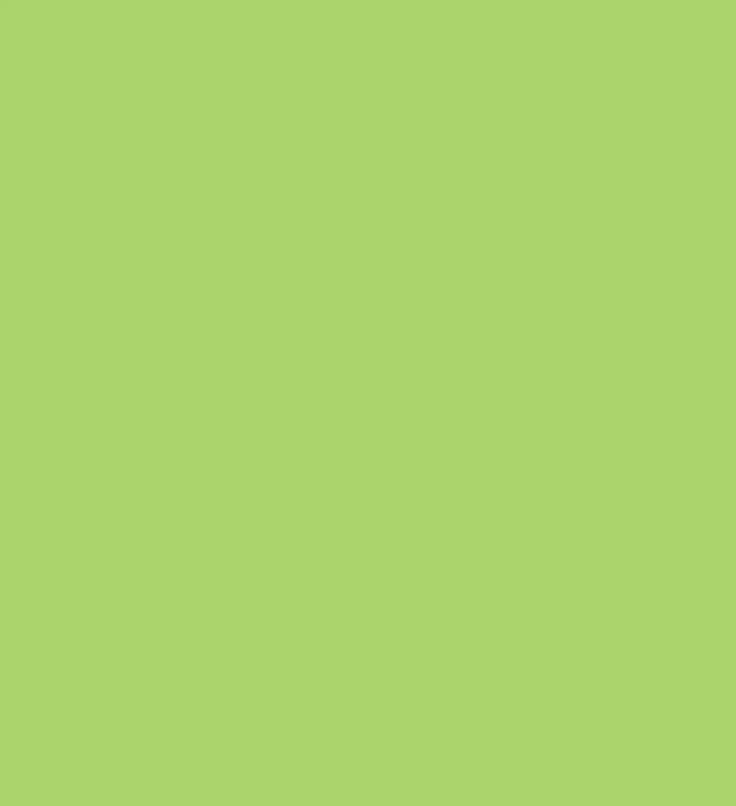
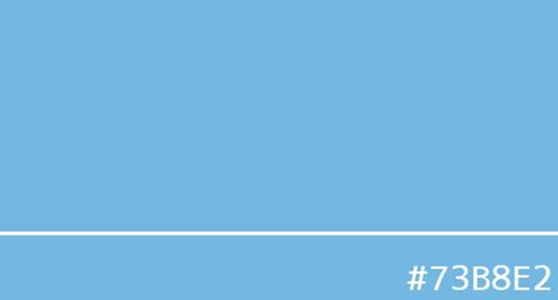
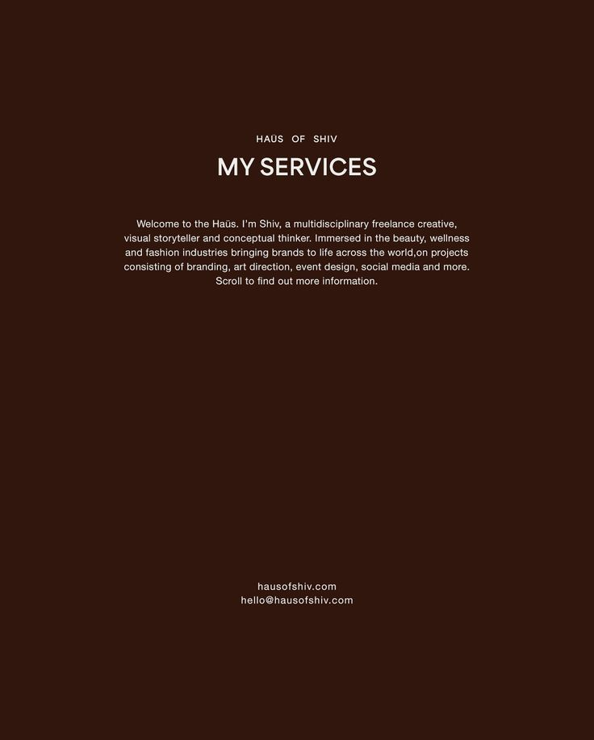

나만의 팔레트
이 아카이브는 저의 주된 취향을 담고 있는 사적인 색채의 기록소입니다.
ㅡ
huee라는 이름 아래 저만의 방식으로 색의 정의를 새로 해 봅니다. 색채는 저에게 가장 솔직한 언어이기에, 이 웹사이트는 저라는 주관적인 필터를 거쳐 구축된 일상 속의 선물입니다. 이 기록소의 모든 콘텐츠는 제 취향에 알맞는 세 가지 색, 즉 딥 그린, 버건디, 데이지 컬러를 중심으로 설명됩니다.딥 그린은 고목의 그늘처럼 고요함의 무드와 낮은 온도를 품고 있어 저의 사색과 안정의 경계를 만들며, 버건디는 짙은 깊이의 와인처럼 담백한 무드와 높은 열정의 온도를 대변하여 저의 주체적인 자신감과 강한 에너지를 일깨우고, 데이지 컬러는 햇살이 스민 듯한 포근함의 무드와 따뜻함의 온도를 전달하며 일상 속의 가장 포근한 안정을 선사합니다.
온도의 기록 페이지에서는 이 세 가지 주조색이 지닌 각각의 분위기와 온도 등을 분석하여, 주관적인 감각을 객관적인 무드로 기록하는 전문성을 더합니다. 그리고 감각의 채집 페이지에서는 딥 그린 소파, 버건디 알람시계, 데이지 가디건처럼 저의 감각을 대변하는 소품들을 통해 색채가 소유가 아닌 경험이라는 것을 스토리텔링하며, 보편적인 공감대 속에서 색채의 근원을 탐색합니다.
그러나 저는 이러한 단순한 감각의 나열에 머무르지 않고, 더불어 나만의 팔레트라는 영역을 통해 주관적인 조합과 더불어 보색 대비, 유사색 조합과 같은 색채 이론의 원리를 적용한 기능적 팔레트를 제시하여 색채의 다양성 확대와 전문적인 활용 가치를 동시에 확보해 보고자 합니다. 이 팔레트들은 극적인 무드를 연출하는 보색 대비 조합이나 안정적인 배경을 구축하는 유사색 조합처럼, 색채가 무드 건축 재료로서 어떤 기능을 하는지에 대해 설명합니다.
마지막으로 색채의 공간에서는 단색 테마, 강렬한 대비, 비현실적인 색채를 극대화한 실존하는 건축 및 예술 공간, 자연 경관들을 분석함으로써, 제가 정의한 색채들이 현실 세계에서 어떻게 압도적인 무드로 발현되는지 시각적으로 증명하고, 이 아카이브의 독창적인 개성을 완성합니다. huee는 이 모든 과정을 통해 저의 감각적 정의를 세상과 공유합니다.


#7F001B #039B8E #FFF8DC : 클래식 무드
버건디와 청록색의 보색 관계를 활용하여 시각적 대비을 극대화하고, 밝은 데이지 컬러로 상쾌한 무드을 확보하는 조화로운 조합입니다.


#092111 #7F001B #8C8B55 : 앤틱한 무드
딥 그린의 유사색들을 사용하여 톤 온 톤, 즉 자연스러운 깊이감을 연출하고, 버건디를 소량의 악센트로 사용하여 고전적인 무게감을 더합니다.



#FFDE77 #ABD46C #73B8E2 : 캐주얼한 무드
데이지 컬러를 중심으로 채도를 살짝 높이거나 낮춘 뉴트럴 컬러들을 조합하여 햇살 아래의 산뜻함을 표현합니다. 옅은 그린을 미니멀한 포인트로 사용하여 시각적인 활기를 더합니다.
>
#7F001B #7F001B #12294B : 고전적인 무드
어두운 다크 브라운 컬러를 중심으로 무게감 있게 퍼지는 컬러 구성을 보입니다. 오래된 서적의 느낌이 물씬 나는 버건디와 네이비 컬러의 조화는 마치 다크 브라운과 일체한 듯 자연스레 어우러지는 무드를 자랑합니다.